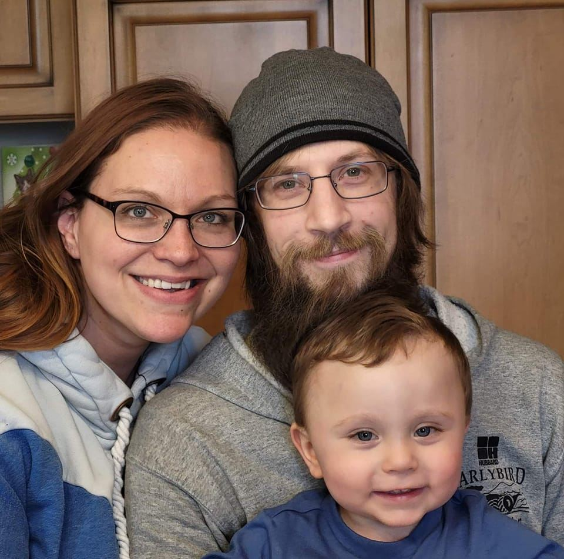
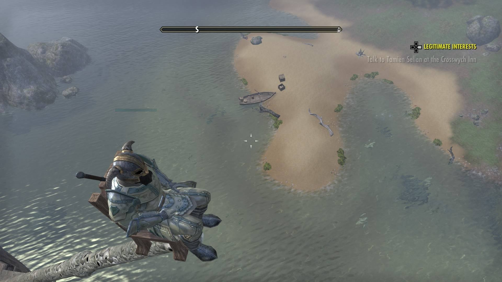

BACKGROUND
In the year 1987...
I was born into the world, in an off-base hospital that was located in Great Falls, Montana.
Only after spending one year of my life there, I moved along with my mother to Metamora IL, spending my time here ever since.
I attended all required public schooling requirements and immediately got into the workforce. Starting in the fast-food industry,
then to industrial industry, and lastly to the the ever flowing shipping and receiving industry. My lovelife has been like an
unmoving statue. Meeting my soulmate at age of thirteen, she has been an ever presence in my life for the past twenty-one
years. I became a father on 01/09/2020 to my son, Xander. He was born during a pandemic and diagnosed with Common Variable
Immune Deficiency (CVID). Our family has still been mostly shut in even after the pandemic passed and restrictions were
lifted. Given the newfound restrictions in life, I have been on the search to alter my career to fit around its new
boundries and requirements. Bringing me here to the present day, at the ripe age of thirty-four.

HOBBIES
What makes me... well.. me!
I've been an avid gamer since childhood starting in the classic Nintendo GameBoy era. I game currently on my PC, PS5,
and the Switch. I just finished up "Tiny Tina's Wonderlands", which was a pretty dope game. I'm going to be working on
"Horizon: Forbidden West" next (likey sometime after these next three months). I'm avid in the arts, anything that gives me
the ability to create. I've worked with stone, clay, paints, charcoal, pencil, pen, wood, and many other medias. I'm
currently working on contained living eco-systems with apololyptic undertones. I'm a reader and collector of books and writings.
I've recently branched out into the comic book realm and I'm very much enjoying the creative fantasy worlds people write and
illustrate.
Why Software Engineering?
It's time for a new adventure.
I have been pretty stagnant in the career aspect of my life. I've been with my current company for fifteen years and I have
really nothing to show for it. I've moved through all the ranks I could before hitting the cap. My career is unable to fulfill
alot of aspects of life, my wants, and my needs. I've always had a thing for code. I took a coding class in highschool but
failed miserably (I'm pretty sure I received an F). I left coding to rest after that, but always had a desire for it.
Recently, the topic of software engineering, being a dev, writing code, and programming came up within a friend circle of mine.
I decided to take a peak at how everything was now almost two decades later. Thats when I found out about Coding Temple.
After some research and talking, I decided to re-take the plunge. Now I'm starting the adventure I was meant to go on but didn't
fully take on decades ago!